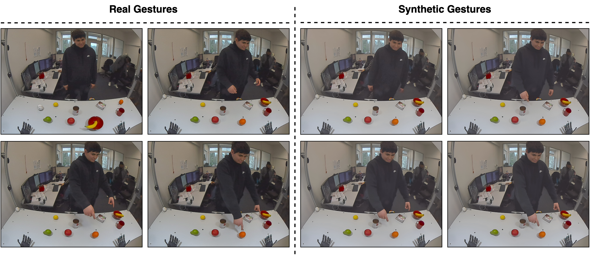
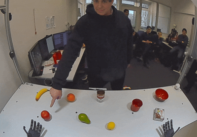
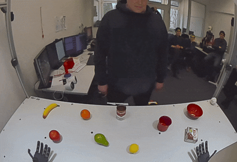

Gesture recognition research, unlike NLP, continues to face acute data scarcity, with progress constrained by the need for costly human recordings or image processing approaches that cannot generate authentic variability in the gestures themselves. Recent advancements in image-to-video foundation models have enabled the generation of photorealistic, semantically rich videos guided by natural language. These capabilities open up new possibilities for creating effort-free synthetic data, raising the critical question of whether video Generative AI models can augment and complement traditional human-generated gesture data. In this paper, we introduce and analyze prompt-based video generation to construct a realistic deictic gestures dataset and rigorously evaluate its effectiveness for downstream tasks. We propose a data generation pipeline that produces deictic gestures from a small number of reference samples collected from human participants, providing an accessible approach that can be leveraged both within and beyond the machine learning community. Our results demonstrate that the synthetic gestures not only align closely with real ones in terms of visual fidelity but also introduce meaningful variability and novelty that enrich the original data, further supported by superior performance of various deep models using a mixed dataset. These findings highlight that image-to-video techniques, even in their early stages, offer a powerful zero-shot approach to gesture synthesis with clear benefits for downstream tasks.



@inproceedings{ali_2026_prompttogesture,
title = {2026 International Conference on Automatic Face and Gesture Recognition (FG)},
author = {Hassan Ali, Doreen Jirak, Luca Müller, Stefan Wermter},
booktitle = {2026 International Conference on Automatic Face and Gesture Recognition (FG)},
year = {2026},
volume = {37},
publisher = {IEEE}
}